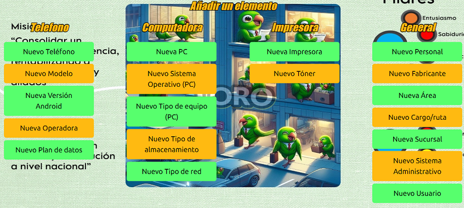
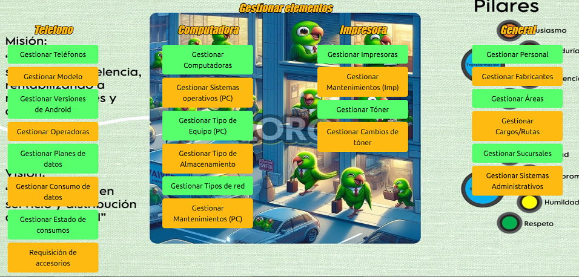
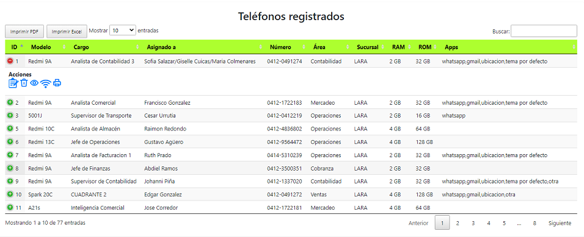
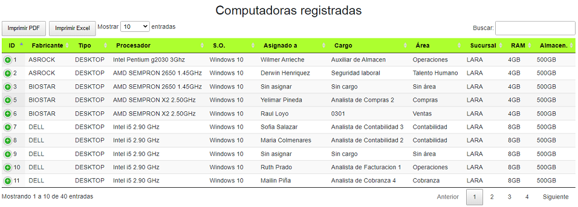
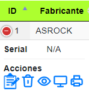
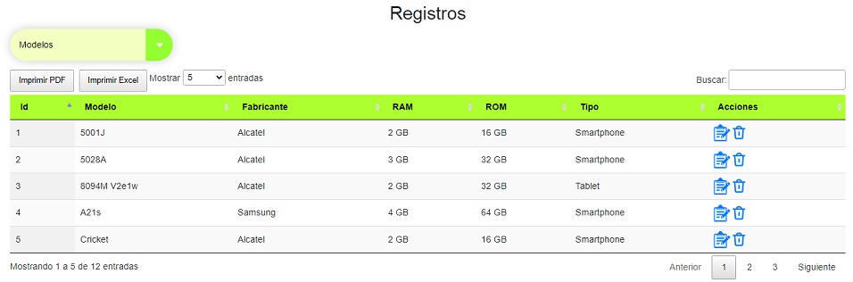
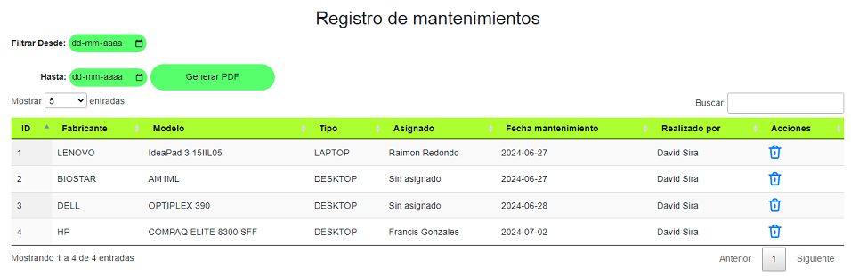
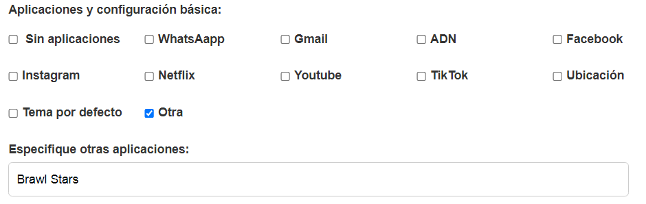
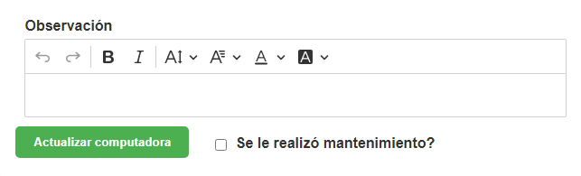
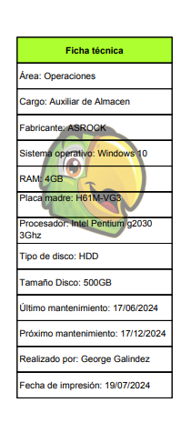

Funciones del sistema
Principales funcionalidades y pantallas del sistema:
- Login
- Lobbys
- Módulo teléfonos
- Módulo PC
- Módulo impresoras
- Módulo general
- Módulos adicionales
- Creación de elementos
- Edición de elementos
- Eliminación de elementos
- Generación de reportes
Login
Un inicio de sesión sencillo con usuario y contraseña. Solo existen 2 tipos de usuarios: Administrador y usuario regular.
Lobby principal
Esta pantalla cuenta con un mensaje de bienvenida al usuario y 3 botones principales que redirigen a los 3 módulos principales del sistema.
Adicionalmente, se puede apreciar en la zona superior de la pantalla la barra de navegación incluída en todas las pantallas. Esta facilita el movimiento a través de las mismas.
Salir: Cierra la sesión
Inicio: Redirige al lobby
Añadir: Redirige al lobby para crear nuevos elementos
Ver y editar: Redirige al lobby para gestionar los elementos existentes
Gestionar: Este muestra una pequeña lista desplegable que sirve como acceso directo para gestionar los teléfonos, computadoras, impresoras y usuarios
Lobby de creación
Este lobby permite acceder a los distintos módulos para crear cada uno de los elementos existentes en el sistema (teléfonos, computadoras, personal, cargos, etc...).
Lobby de gestión
Este lobby permite acceder a los distintos módulos para gestionar (ver, editar y eliminar) cada uno de los elementos existentes en el sistema (teléfonos, computadoras, personal, cargos, etc...).
Módulo de teléfonos
Este es uno de los módulos principales. Muestra la información relevante de cada uno de los teléfonos corporativos registrados en la base de datos
Requisición de accesorios: Muestra un reporte PDF sobre todos los accesorios que se encuentran en mal estado para solicitar la reparación o reposición de los mismos.
Show (5) entries: Es un botón desplegable que permite mostrar 5, 10, 25 o todos los registros a la vez.
Search: Es una barra de búsqueda para filtrar los elementos por nombre. No es sensible a mayúsculas, sí es sensible a tildes y permite filtrar con información de cualquiera de los campos.
Título de columnas: Los títulos de las columnas (ID, Marca, Cargo, etc...) permiten ordenar de forma alfabética las columnas al hacer click sobre ellos.
Finalmente, los botones "Previous", "Next" y los números permiten desplazarse a través de las páginas según la cantidad de elementos que hayan en la tabla
Adicionalmente, están estos íconos que permiten hacer las siguientes acciones:
Lápiz: Sirve para editar la información teléfono.
Basura: Sirve para eliminar (deshabilitar) el teléfono. (Solo visible para usuarios con permisos administrativos)
Ojo: Genera el reporte PDF de auditoría para cuando se le realiza una revisión.
Impresora: Genera la constancia de entrega en caso de asignarle el teléfono a un nuevo usuario.
Módulo de computadoras
Otro de los módulos principales. Muestra la información relevante de cada una de las computadoras corporativas registradas en la base de datos
Show (5) entries: Es un botón desplegable que permite mostrar 5, 10, 25 o todos los registros a la vez.
Search: Es una barra de búsqueda para filtrar los elementos por nombre. No es sensible a mayúsculas, sí es sensible a tildes y permite filtrar con información de cualquiera de los campos.
Título de columnas: Los títulos de las columnas (ID, Fabricante, Tipo, etc...) permiten ordenar de forma alfabética las columnas al hacer click sobre ellos.
Finalmente, los botones "Previous", "Next" y los números permiten desplazarse a través de las páginas según la cantidad de elementos que hayan en la tabla
Hacer click en el símbolo de "+" al lado de la id despliega el resto de columnas que no caben en la pantalla, entre ellas se encuentran las acciones:
Lápiz: Sirve para editar la información del equipo.
Basura: Sirve para eliminar (deshabilitar) el equipo. (Solo visible para usuarios con permisos administrativos)
Ojo: Genera el reporte PDF de auditoría para cuando se le realiza una revisión.
Monitor: Genera una ficha técnica con los principales componentes del equipo, junto a su área y el cargo al que está asignado. Esta ficha se imprime y se pega en el equipo cuando se le realiza un mantenimiento.
Impresora: Genera la constancia de entrega en caso de asignarle el equipo a un nuevo usuario. Solo se entrega constancia cuando el equipo en cuestión es una laptop.
Módulo de impresoras
El último de los módulos principales. Muestra la información relevante de cada una de las impresoras registradas en la base de datos
Show (5) entries: Es un botón desplegable que permite mostrar 5, 10, 25 o todos los registros a la vez.
Search: Es una barra de búsqueda para filtrar los elementos por nombre. No es sensible a mayúsculas, sí es sensible a tildes y permite filtrar con información de cualquiera de los campos.
Título de columnas: Los títulos de las columnas (ID, Fabricante, Modelo, etc...) permiten ordenar de forma alfabética las columnas al hacer click sobre ellos.
Finalmente, los botones "Previous", "Next" y los números permiten desplazarse a través de las páginas según la cantidad de elementos que hayan en la tabla
Adicionalmente, están estos íconos que permiten hacer las siguientes acciones:
Lápiz: Sirve para editar la información de la impresora.
Llave inglesa: Sirve para registrar la información importante cuando se le realiza un mantenimiento a la impresora.
Impresora: Genera un reporte PDF con todos los mantenimientos realizados a la impresora.
Gotas: Sirve para registrar la información importante cuando se le realiza un cambio de tóner. (Solo visible para impresoras que usan tóner)
Gráfica de columnas: Genera un reporte PDF sobre el historial de cambios de tóner y sus rendimientos. (Solo visible para impresoras que usan tóner)
Basura: Sirve para eliminar (deshabilitar) la impresora. (Solo visible para usuarios con permisos administrativos)
Módulo general
Este módulo contiene el resto de tablas adicionales comprimidas en un mismo lugar, y cuenta con un botón para seleccionar qué tabla se desea visualizar.
Show (5) entries: Es un botón desplegable que permite mostrar 5, 10, 25 o todos los registros a la vez.
Search: Es una barra de búsqueda para filtrar los elementos por nombre. No es sensible a mayúsculas, sí es sensible a tildes y permite filtrar con información de cualquiera de los campos.
Título de columnas: Los títulos de las columnas (ID, Nombre, etc...) permiten ordenar de forma alfabética las columnas al hacer click sobre ellos.
Finalmente, los botones "Previous", "Next" y los números permiten desplazarse a través de las páginas según la cantidad de elementos que hayan en la tabla
Adicionalmente, están estos íconos que permiten hacer las siguientes acciones:
Lápiz: Sirve para editar la información de un elemento.
Basura: Sirve para eliminar (deshabilitar) un elemento. (Solo visible para usuarios con permisos administrativos)
Módulos adicionales
El sistema cuenta con 4 módulos adicionales a los anteriormente mencionados: tóner, usuarios, cambio tóner y mantenimientos (PC). Mientras que los primeros 3 no tienen ninguna característica que los haga diferir mucho de los demás (aparte de las colúmnas), el módulo de mantenimientos sí tiene un detalle adicional:
Filtrar desde-hasta: Como su nombre indica, sirven para seleccionar una fecha inicial y una fecha final para posteriormente filtrar el reporte de mantenimientos en base a esas fechas.
Generar: Genera un reporte PDF en el que se muestran todos los mantenimientos realizados a las computadoras, en base a los filtros seleccionados anteriormente. Si no se selecciona ninguna fecha, se mostrarán todos. Si se selecciona únicamente una fecha, se filtrará desde esa fecha hasta hoy, o en su defecto, desde el principio hasta la fecha seleccionada.
Módulos de creación
Cada tabla de la base de datos cuenta con su propio módulo de creación. Todos tienen similitudes entre sí, así que usaré el módulo de creación de teléfonos como ejemplo para explicarlos.
En el primer segmento, se aprecian 3 tipos de entradas: fecha, selección única y selección múltiple.
Fechas: Estas pueden ser ingresadas manualmente o hacer click en el ícono del calendario para seleccionarlas.

Selección única: Muestran una lista de elementos existentes en la base de datos del tipo seleccionado. Cuemta con una barra de búsqueda para filtrar el nombre y facilitar la búsqueda. (Estos cámpos no pueden quedar vacíos)
Selección múltiple: Permiten seleccionar más de un elemento según sea necesario (en este caso, accesorios y aplicaciones). Es obligatorio seleccionar al menos una opción. Adicionalmente, si en el apartado de aplicaciones y configuración básica se selecciona la opción "Otra" se abre un nuevo campo para ingresar las aplicaciones adicionales.

En el segundo segmento, se aprecia solo un tipo de entrada de texto simple.
Los campos de "Almacenamiento ocupado" y "Consumo de datos" y cuentan con un pequeño campo de selección para elegir si la unidad de medida del valor ingresado es en "GB" o "MB". No colocar la unidad de medida directamente dentro del campo. En caso de ser un valor decimal, separar las décimas con puntos (.) y colocar máximo 2 decimales.
En el tercer y último segmento, se pueden visualizar otros 2 tipos de entradas, una de texto para colocar obsevaciones, la cual permite remarcar el texto y aplicarle los estilos básicos como negrita y cursiva (este campo se puede dejar vacío, su valor por defecto será: "Mantiene la configuración inicial."), y otra de selección simple para elegir el estado de los accesorios. Finalmente, en la parte inferior se encuentra el botón para crear el teléfono.
Módulos de edición
Cada tabla de la base de datos cuenta con su propio módulo de edición. Las tablas principales destacan en algunos aspectos sobre las demás que son más sencillas, a continuación se explicará su funcionamiento general y se hará énfasis en dichos aspectos.
Empezando por el módulo de edición de teléfonos, en su primer segmento se aprecian los mismos 3 tipos de entradas que en el módulo de creación: fecha, selección única y selección múltiple. Solo hay 2 diferencias, la primera es que se muestran seleccionadas las opciones que corresponden a ese teléfono, y la segunda es el funcionamiento de los asignados, que ahora trabaja de la siguiente manera:
Sin cambios: Es la opción por defecto, esta mantiene al asignado sin realizar ningún cambio.
Sin asignar: Si se presiona el símbolo de la "X", el asignado es eliminado y el dispositivo queda sin asignar.
Asignado adicional?: Si se selecciona esta casilla, permite añadir un usuario extra al teléfono en caso de estar asignado a más de una persona.
Este es el único segmento con cambios significativos, el resto se rigen por la misma lógica. Cabe recalcar que en este módulo, las entradas de "Almacenamiento ocupado", "Consumo de datos" y la casilla de la aplicación "WhatsApp" son obligatorias, además de que debe tener mínimo un accesorio seleccionado.
Continuando con el módulo de computadoras, solo vale la pena destacar el último segmento, en el que se puede visualizar una casilla de "Se realizó mantenimiento?" que como su nombre indica, debe ser seleccionada si se le realizó algún tipo de mantenimiento al equipo para guardar el registro.
Por último, en el módulo de impresoras, se puede visualizar una casilla de "Tóner adicional?" bajo la selección de tóner, la cuál se rige bajo la misma lógica que la de los asignados en los teléfonos. Debe ser seleccionada si se le quiere añadir un tóner adicional.
Módulo de eliminación
Este módulo es sencillo, todos las tablas utilizan el mismo. Basta con presionar el ícono del cubo de basura para eliminar el elemento deseado. Esta eliminación es lógica, es decir que el elemento no se elimina de la base de datos, en su lugar se desactiva para que no se siga mostrando.
Generación de reportes.
El sistema tiene la capacidad de generar los siguientes reportes:
Auditoría: Este reporte se genera cuando se le realiza una revisión a un teléfono, este incluye información acerca de: estado de los accesorios, aplicaciones instaladas, consumo de datos y una observación de ser necesario.
Constancia: Este reporte se genera cuando se le hace entrega de un teléfono corporativo a un nuevo usuario. Contiene la información principal del teléfono y los términos y condiciones.
Requisición de accesorios: En este reporte se pueden visualizar los accesorios que se encuentran en mal estado por cada teléfono y modelo, con el objetivo de solicitar un reemplazo para dichos accesorios.
Auditoría: Este reporte se genera cuando se le realiza una revisión a una PC, este incluye información acerca de: estado de los accesorios, programas instalados y una observación de ser necesario.
Constancia: Este reporte se genera cuando se le hace entrega de una laptop corporativa a un nuevo usuario. Contiene la información principal de la laptop y los términos y condiciones.
Ficha técnica: Este reporte por lo general se genera después de realizarle un mantenimiento a una PC. En este se muestran las características principales del equipo, el área en la que se encuentra, la fecha del mantenimiento y la fecha en la que corresponde el próximo (6 meses después del último).

Reporte de mantenimientos: En este reporte se registran todos los mantenimientos realizados en el intervalo de tiempo seleccionado.
Reporte de mantenimientos: En este reporte se registran los mantenimientos realizados a cada impresora individualmente.
Reporte de rendimiento de tóners: En este reporte se registran los cambios de tóner realizados a cada impresora, junto con sus rendimientos en el tiempo que fueron usados.
Para teléfonos:

Para computadoras:
Para impresoras:
Con ese último, se da por concluido el listado de reportes creados hasta la fecha.